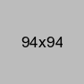

Most Significant Contribution
Understanding how traders do technical analysis and the markers traders look for in a candlestick chart. Working through 18+ pieces of data points to prioritize what needs to be displayed and where on the the mobile screen will it be most useful for the trader.
Most Significant Win
Designed a high traffic screen with very complex information architecture to accurately reflect the dynamic and constantly changing nature of the platform without wearing out or overwhelming the user.